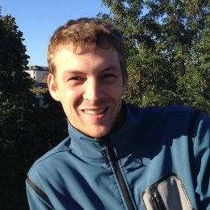

Brief Bio
I obtained a M.Sc. in computer science ("Diplom Informatik") from the Humboldt Universität zu Berlin, Germany in April 2009 and a Ph.D. in machine learning ("Dr. rer. nat.") from the University of Potsdam, Germany, in May 2013. After finishing my Ph.D. in 2013, I left university and joined SoundCloud as a machine learning engineer and as a Data Science Lead since November 2016.
Research Interests
My research interests include theory and techniques in machine learning and statistics, in particular, for music classification / information retrieval and social networks. I have also worked on active learning and evaluation, learning under distribution shift, and structured learning in the context of scalable ranking of online ads.
Software
Check my Git repositories.
Reviewing
I have reviewed for the major conferences and journals in the area of machine learning:
- Conference on Neural Information Processing Systems, 2013-2015
- International Conference on Machine Learning, 2012-2016
- Conference on Knowledge Discovery and Data Mining
- IEEE Transactions on Pattern Analysis and Machine Intelligence
- Machine Learning Journal, 2015, 2012.
Publications
Matthias Bussas, Christoph Sawade, Tobias Scheffer, and Niels Landwehr. Varying-coefficient models for geospatial transfer learning. Machine Learning, doi:10.1007/s10994-017-5639-3, 2017.
Paul Prasse, Christoph Sawade, Niels Landwehr, and Tobias Scheffer. Learning to identify concise regular expressions that describe email campaigns. Journal of Machine Learning Research (16) 3687-3720, 2015.
Michael Großhans, Christoph Sawade, Tobias Scheffer, and Niels Landwehr. Joint Prediction of Topics in a URL Hierarchy. Proceedings of the 24th European Conference on Machine Learning (ECML-2014), Nancy, France, 2014.
Christoph Sawade. Active Evaluation of Predictive Models. PhD thesis, Universitätsverlag Potsdam, 2013.
Michael Großhans, Christoph Sawade, Michael Brückner, and Tobias Scheffer. Bayesian Games for Adversarial Regression Problems (with appendix). Proceedings of the 30th International Conference on Machine Learning (ICML-2013), Atlanta, USA, 2013. JMLR: W&CP volume 28.
Christoph Sawade, Steffen Bickel, Timo von Oertzen, Tobias Scheffer, and Niels Landwehr. Active Evaluation of Ranking Functions based on Graded Relevance (Extended Abstract). Proceedings of the 23rd International Joint Conference on Artificial Intelligence (IJCAI-2013), Invited Track on Best Papers from Sister Conferences, Beijing, China, 2013.
Christoph Sawade, Steffen Bickel, Timo von Oertzen, Tobias Scheffer, and Niels Landwehr. Active Evaluation of Ranking Functions based on Graded Relevance. Machine Learning Journal, 2013, 10.1007/s10994-013-5372-5.
Christoph Sawade, Niels Landwehr, and Tobias Scheffer. Active Comparison of Prediction Models (with appendix). Proceedings of the 26th Annual Conference on Neural Information Processing Systems (NIPS-2012), Lake Tahoe, USA, 2012.
Christoph Sawade, Steffen Bickel, Timo von Oertzen, Tobias Scheffer, and Niels Landwehr. Active Evaluation of Ranking Functions based on Graded Relevance. Proceedings of the 22nd European Conference on Machine Learning (ECML-2012), Bristol, England, 2012. Best Paper Award
Paul Prasse, Christoph Sawade, Niels Landwehr and Tobias Scheffer. Learning to Identify Regular Expressions that Describe Email Campaigns (with appendix). Proceedings of the 29th International Conference on Machine Learning (ICML-2012), Edinburgh, Scotland, 2012.
Christoph Sawade, Niels Landwehr, and Tobias Scheffer. Active Estimation of F-measures (with appendix). Proceedings of the 24th Annual Conference on Neural Information Processing Systems (NIPS-2010), Vancouver, Canada, 2010.
Christoph Sawade, Niels Landwehr, Steffen Bickel, and Tobias Scheffer. Active Risk Estimation. Proceedings of the 27th International Conference on Machine Learning (ICML-2010), Haifa, Israel, 2010.
Steffen Bickel, Christoph Sawade, Tobias Scheffer. Transfer Learning by Distribution Matching for Targeted Advertising. Proceedings of the 22th Annual Conference on Neural Information Processing Systems (NIPS-2008), Vancouver, Canada, 2008.
Teaching
Several introductory and advanced courses on basic theory and techniques of machine learning. Please check out my academic website.